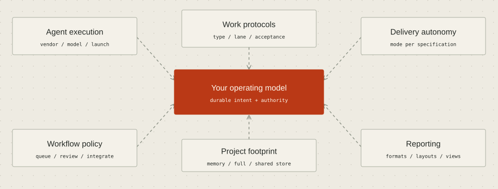

THE GOVERNED SOFTWARE FACTORY
Configure the way your team works

AIDA separates what work means, how it is dispatched and who may authorize its next step. You can start with conversational development and configure more delegation for selected work. Configuration is a product capability: teams can choose agent profiles, execution modes, work protocols and presentation preferences without adopting one fixed operating pattern.
Six places to make a choice
- Per-spec execution mode:
operator,guided,drive,drainanddecidedescribe different human involvement contracts. They do not grant roles or merge authority. Use the overview andaida do --helpto inspect the dispatch contract. - Agent and launch defaults: supported managed launchers include Claude Code, Codex and Antigravity. Machine and project
agents.tomlfiles carry vendor defaults. The launch commands support vendor-specific options; model names are opaque pass-through values, not AIDA validation of model availability. Effort, permission flags and containment support differ between harnesses. - Work protocols: editable META requirements tagged
protocol:<type>define type guidance. Optionalprotocol:lane:<lane>overlays tailor research, documentation or consequential design work. Useaida protocol listto inspect installed protocols. If the store has none, an operator can install defaults withaida protocol seed; then useaida protocol show task --lane docsto inspect the actual text before changing it. - Workflow policy: project settings control such features as protocol enforcement, drain behavior and required CI treatment. Read the relevant command help and lifecycle reference before editing policy. Changing documentation or guidance does not replace a runtime authority check.
- Project footprint: full, minimal and memory-lane footprints select how much scaffolding a project adopts.
aida init --footprint memory-laneinstalls the store and reflex capture/learn guidance;--footprint minimalinstalls store/config/cache without that guidance. The distinct--minimaldemonstration option is not the same as--footprint minimal. - Reporting preferences: history layouts, output format, workflow hints and glyphs let operators and agents choose useful views.
aida history --helpdescribes named/inline templates;aida config hints,aida config glyphand the global--formatoption address different surfaces. A presentation setting does not change spec identity or authority.
Scope is feature specific
There is no universal precedence ladder for every AIDA setting. Read each feature's contract.
Agent defaults are read from machine ~/.aida/agents.toml and project .aida/agents.toml; individual readers determine merging and overrides. Default-flag lists and scalar permission fields do not necessarily combine the same way. aida config permissions show reports the effective launch posture. The interactive configuration menu needs a terminal; command help and read-only inspection remain available to non-TTY agents.
Spec execution mode and META protocols belong to the requirements graph. Project guidance and policy files live with their documented project scope. Clone-local allocation and transport settings belong to the clone's common Git directory; linked worktrees share that clone state. Machine preferences and grants have their own local scope and trust rules. Copying a project config file does not copy a live grant, and a friendly ID alias does not confer authority.
Guidance and enforcement are different
Protocol precedence is type, then lane, then spec acceptance. Pickup carries labeled guidance with a combined 40-line body cap; a long protocol is not an unlimited instruction channel. The compact per-turn notice repeats type guidance while the spec lease is held. The CLI and MCP protocol resource expose the same rendered text.
The prose protocol is guidance. Only specifically implemented machine checks enforce protocol deliverables; the default protocol enforcement posture is warn. A claim that all written instructions are enforced would be incorrect. Reviewers still evaluate acceptance and evidence.
Explore a policy request
For routine documentation you might ask: "Use our preferred agent, preserve independent review, and let approved bounded work proceed with minimal interruption." For a sensitive design change: "Keep the design conversation interactive and require the accountable person's decision."
These are illustrative requests, not live configuration writes or complete configuration recipes. Ask the agent to inspect current settings, identify the exact supported knobs and propose a reviewable change. Confirm the affected scope before applying it. AIDA's permission posture and role authority remain separate from the amount of conversation you select.
Inspect before you change
aida init --help
aida do --help
aida protocol list
# If defaults have not been installed, run: aida protocol seed
aida protocol show task --lane docs
aida config permissions show
aida agent new codex --help
aida agent new claude --help
aida agent new antigravity --help
aida history --helpThe setup reference, roles and sessions and reporting reference contain the operational details. Configuration should fit your team while preserving the source-backed limits of each feature.
Landing policy
[landing] mode in .aida/config.toml sets what a merge into the default branch waits for: ci-gated (the default) or review-gated.
[landing] red_main.fix_window (default "2h", from one minute to one week) is how long a confirmed red main may wait for a fix before AIDA recommends a revert. Set it with aida config menu, which checks that the value is a duration in range. See When main goes red.
AIDA reads both from the default branch only, and aida config show lists the effective values with their source. A value AIDA does not recognise falls back to ci-gated, with a warning. See Landing approved work for what each mode does, and Who may do what for who may merge.
Unset execution mode
Only drain lets automation merge a spec's PR without a person. A spec with no execution mode is supervised: aida pr ship and aida pr train leave its PR open for a human at a terminal or an active mandate. [gate.unset_mode] in .aida/config.toml changes what an unset mode means:
[gate.unset_mode]
default = "supervised" # the default; or "drain"
drain_types = ["bug", "task"] # with "drain": the spec types it coversSet default = "approved-small" to apply drain only to specs currently Approved and tagged small. This option ignores drain_types. Explicit modes take precedence. Strict-tier spec metadata or changed paths (including leases, claims, grants, containment, gates, guards and authority) keep the spec supervised.
With default = "drain", a spec with no mode whose type is in drain_types merges as a drain spec would. All other merge checks still apply: an independent approval at the PR's head, green CI and no holds. The setting never applies to:
- a spec that sets its own mode (
drive,guided,operatoranddecidestay as set) - a sensitive spec: a keystone, epic, security, authority, containment or
operator-onlyspec, the same classes a mandate excludes - a PR that changes a protected gate path (
.aida/config.toml, the gate code, and anyprotected_pathsthe project adds), or whose changed files cannot be read - a project whose protected gate paths cannot be read: AIDA reads
protected_pathsfrom the same default-branch commit as the setting and from~/.aida/config.toml, and if either does not parse, no spec takes the default - a PR whose head moves after its files were checked:
aida pr shipstops, and a fresh run checks the new head
AIDA reads the setting from the default branch only, so a branch cannot turn it on for itself. A value AIDA does not recognise, a missing drain_types list, or an unknown type name keeps the supervised behaviour. When a PR is held, the message names the effective mode and why, for example BUG-12 is marked unset (supervised: not defaulted, the change touches ...). aida show prints the effective mode of a spec with no mode, for example Effective mode: drain (project default for unset bug), whenever the project sets a drain default. For a spec merged into another spec's PR (superseded into a carrier), it prints the carrier's mode and names the carrier, as the merge does.
The drain's own merge phase and the burndown wave merge still hold an unset spec. The merge seat lands those PRs with aida pr train, which applies the setting.